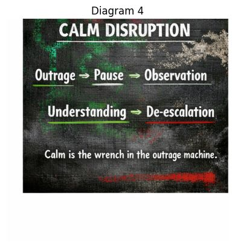

The counter-mechanism to the outrage engine.
This diagram shows the counter-mechanism to the outrage engine. The earlier diagrams explained how panic spreads. This one shows how a single calm response can interrupt the whole chain.
Think of it like dropping a wrench into a spinning machine. ⚙️🧰
The gears stop because one piece no longer behaves the way the system expects.
Outrage is the moment when emotional escalation begins.
Typical signals:
At this stage the system expects instant reaction. Most online conflicts accelerate here.
The outrage machine feeds on speed and intensity.
Pause is the first disruption.
Instead of reacting immediately, the person delays their response. Even a small pause can change the emotional trajectory.
Pause might look like:
The pause slows the emotional chain reaction.
Now the person shifts into pattern recognition mode.
Instead of fighting inside the conflict, they step back and observe:
Observation changes the brain from reactive mode to analytical mode.
That alone lowers emotional intensity.
Once observation happens, a deeper insight becomes possible.
Understanding means seeing the forces behind the conflict, not just the surface argument.
This might include recognizing:
Understanding dissolves the illusion that the conflict is purely personal.
It becomes a system pattern.
With understanding comes the ability to lower the emotional temperature.
De-escalation can take many forms:
The key point is that escalation fails to gain traction.
Without emotional fuel, the outrage engine loses momentum.
Calm is the wrench in the outrage machine.
Outrage systems expect participants to mirror anger with anger.
When someone introduces calm instead, the system malfunctions.
The emotional chain reaction stops.
Outrage spreads through emotional mimicry. People unconsciously copy the emotional tone around them.
But calm behaves differently.
Calm slows the rhythm of the interaction. It widens perception and invites reflection.
Sometimes one calm person can change the direction of an entire conversation.
So while earlier diagrams showed how panic spreads, this one shows how individuals can interrupt the cycle.
Pause → Observe → Understand → De-escalate
And every time someone does that, the outrage machine loses a little power.